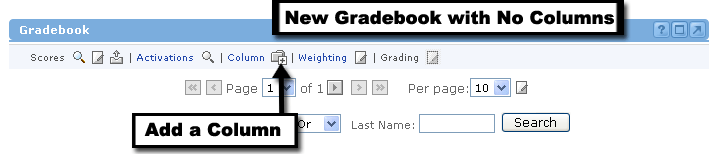
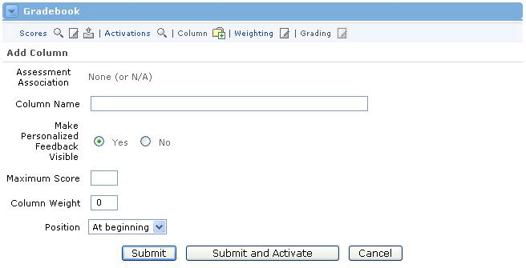
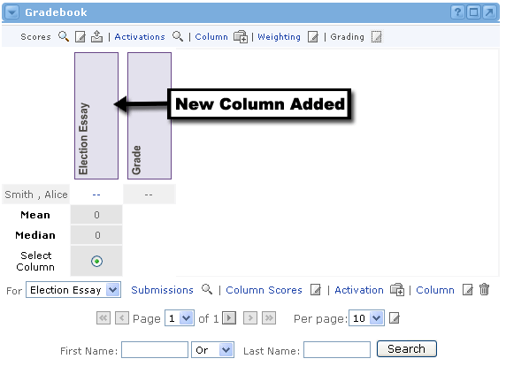

|
Gradebook Setup

At the beginning of offering creation, instructors will want to set up their gradebooks. The first thing to do is to add columns to the gradebook. The screenshot above shows a gradebook with no columns added.

Adding a Column
To add a column, first locate the Gradebook channel, then follow these steps:
- Click the Add Column icon at the top of the channel.
- If this column will be associated with an exam, select the exam from the Assessment Association drop-down menu. If there is no drop-down menu, then there are no assessments (exams) available for selection.
- Type the name of the column in the Column Name field. This name will appear vertically above the column, so it should be something that distinguishes this column from any other, perhaps the name of a specific exam or assignment (i.e. "Tropical Weather Exam" or "Rain Cloud Assignment").
- For the Make Feedback Visible row, click Yes if you would like the users to be able to view feedback after the column is graded. Click No if you do not want any feedback delivered to users.
- Determine a Maximum Score for this column and enter it in the text field. The maximum score is the best possible score a user can obtain.
- Determine a Column Weight for this column. The column weight is a way to place greater importance on one column over others. You can read more about column weights in the Edit All Gradebook Column Weights lesson of this unit.
- The Position pull-down menu allows you to place your column anywhere you desire. The first column will always be placed "At Beginning," but any additional columns can be placed before or after this point.
- When all selections have been made, simply click the Submit button. (The Submit and Activate button will be explained later, as a part of the Activate an Assignment lesson of this unit.)
- You will now see the gradebook with your new column as placed.

|